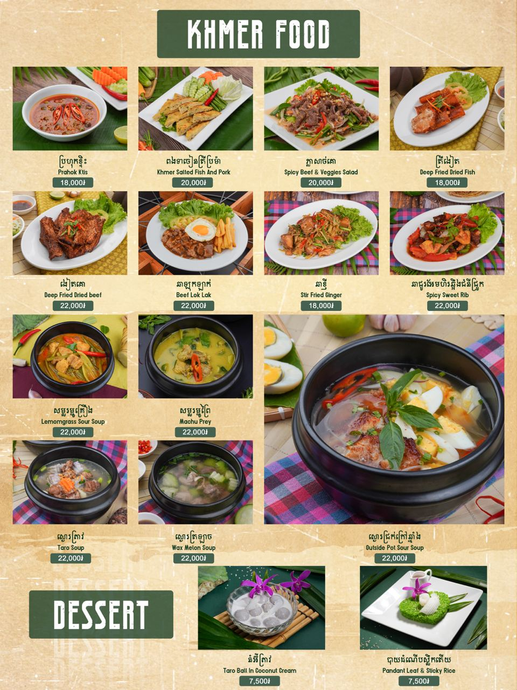

Wellcome to Khmer Resterant
Menu Khmer Food

Ingredients
- Beef tenderloin
- Oyster sauce and Soy sauce
- Palm sugar and Black pepper
- Garlic
- Fresh lettuce, sliced tomatoes, and cucumbers
- Lime juice and salt
Steps
- Marinate: Mix the beef with oyster sauce, soy sauce, sugar, and black pepper. Let it sit for 20 minutes.
- Prepare the Platter: Arrange a bed of fresh lettuce, tomatoes, and onions on a plate.
- Stir-fry: Heat oil in a wok over high heat. Add garlic, then sear the beef quickly until browned but juicy.
- Dipping Sauce: Mix lime juice, salt, and plenty of black pepper in a small bowl.
- Serve: Place the hot beef over the vegetables and serve with steamed rice or a fried egg.
| Calories |
Protein |
Fat |
| 520 kcal |
35g |
22g |
Watch How to Cook